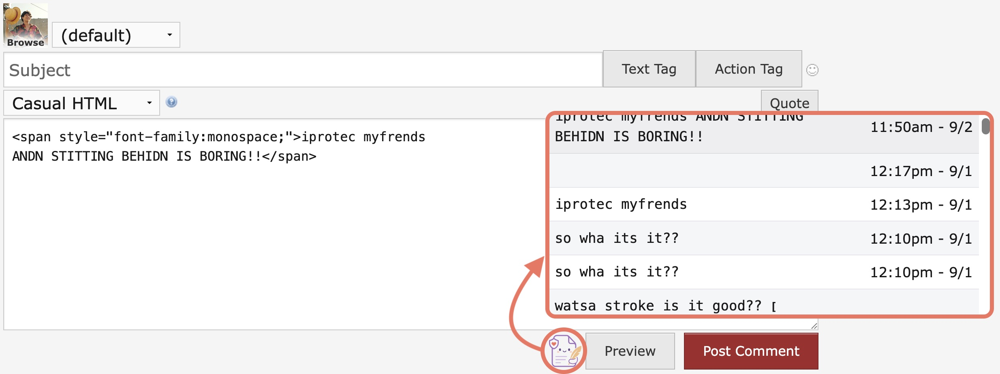
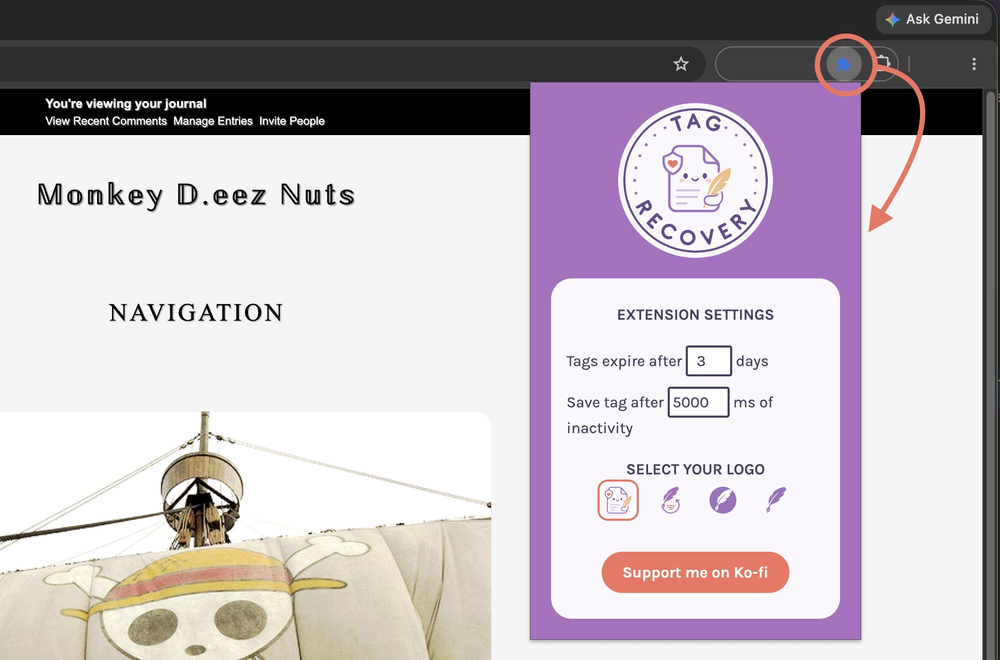

Your tag is safe, even when the browser isn't.
Tag Recovery keeps a quiet copy of everything you type into a Dreamwidth textarea. Crash, stray tab close, or a switch between journals mid-thread — your words are still there when you come back.
Tag Recovery is free and always will be. If it's saved you some heartbreak, consider donating! A Ko-fi helps me keep it going.
Support on Ko-fiWhat it does
Roleplay on Dreamwidth means long, careful tags written across a lot of moving parts — different journals, different comms, different threads. Losing one to a crash is enough to put anyone off rewriting it.
Saves as you write
Every entry and comment is captured in the background automatically.
Knows your games
Each saved tag is filed away with its journal, community, and thread, so restoring the right one is obvious.
Cleans up
After a handful of days, old tags are automatically deleted, so nothing piles up in your browser storage.
Customization
Set storage expiration, choose your recovery icon, and pick how often tags are saved.
In use
View saved tags
On a Dreamwidth page, click the recovery icon under comment box to see a list of tags saved for that community's thread.

Change your settings
Click the recovery icon in the extension toolbar to change your settings.
